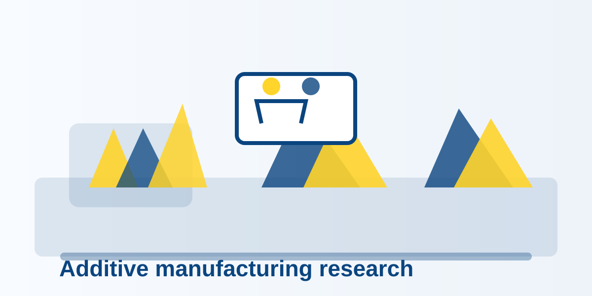

This page demonstrates how a full article opens from the local archive, rather than linking to an empty anchor.

Project background
Add the approved project background, participating researchers, and institutional partners here.
Methods and outcomes
Add the project’s methods, verified findings, and links to publications or further documentation.